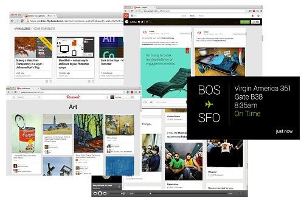
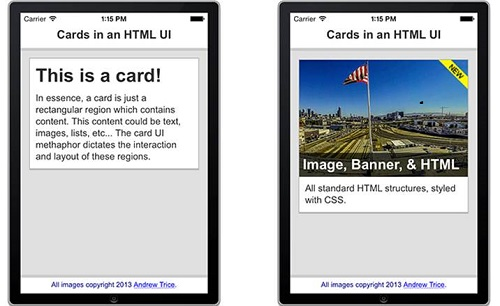
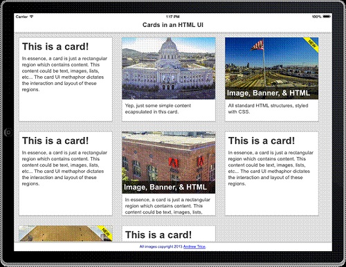
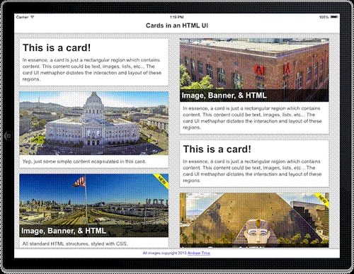
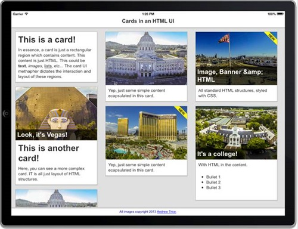
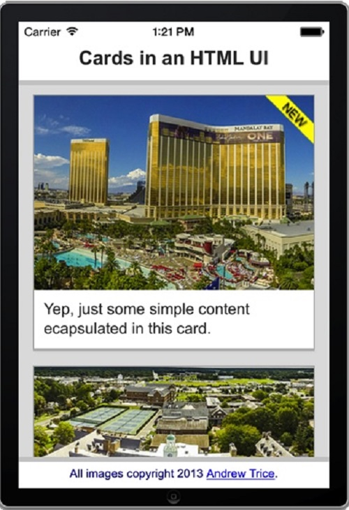

也紀念我們永遠的朋友 李士傑先生（Shih-Chieh Ilya Li）。
在 PhoneGap / HTML5 上實現卡片 (Card) 的使用者介面
◎本文翻譯自 DZone，原作者為 Andrew Trice：https://css.dzone.com/articles/implementing-card-ui-pattern
這些日子，在使用者互動 (user interface) 領域中「卡片」(card) 似乎越來越風靡。有許多地方都可以看到卡片為基礎的使用者互動範例，例如Google Glass、Pinterest、Google Plus、Spotify、Flipboard，以及許許多多數也數不清的地方。

有些人宣稱卡片的使用者互動介面是網站設計的絕對未來，而有些人認為只是另一種趨勢。在這兩種情況下，你可能需要在你自己的應用程序中實現卡片的使用者互動介面。如果你恰巧正以構建 PhoneGap 或瀏覽器的應用程序為目標，你很幸運！
在這篇文章中，我們包含了許多建構卡片式使用者互動範例的網路標準技術。因為這個模式是可以純粹從 HTML 與 CSS 建立出來的，並利用 JavaScript 建立互動行為與動態機制，因此文中我們不會過於注重 PhoneGap 本身。所有在此文中討論的範例之原始碼將可在 https://github.com/triceam/cards-ui 存取。
什麼是「卡片」？
在我們討論如何建立卡片的互動介面之前，我們必須真正明白什麼是卡片。本質上，卡片是一種邏輯上封裝資料的容器。在大部分的時候，卡片式一個包含少量容易 digestible 資訊的矩形空間。矩形區域的邊框 (border) 被用來傳遞封包的資訊。另一種說法是邊框把卡片中的內容從畫面的其他內容中分離出來。通常會有許多卡片放置於使用者的畫面上，並利用邊框或顏色來區分卡片彼此之間的資訊。如果你瀏覽 Pinterest 或 Google Plus 的使用者互動介面，你將會很快地了解到卡片的使用者互動介面。
利用 PhoneGap 或是在 HTML、CSS 和 Javascript 開發
在網頁技術中，你可以非常容易的建立矩形視覺化結構並可以在這些結構中建立內容。讓我們從基本的開始。在下面圖片中，我們有兩個用 HTML 開發的基本卡片結構。

這兩個範例你都可以在 GitHub 知識庫中的 01_simple_card.html 看到。
在我們討論卡片之前，讓我們看一下網頁結構中包含的卡片。有檔頭 (header) 資料、檔尾 (footer) 資料以及主要的內容區域。檔頭資料用來作為一個 PhoneGap 區域的檔頭瀏覽器。這些每一個 HTML 結構都有一個 CSS 樣式來決定要如何呈現這些內容。所有的卡面我們都增加在＜div＞標籤中，並使用名為 "content" 的 CSS 樣式。
01.＜body＞ 02.＜div class="content"＞ 03.＜!--- All cards go here ---＞ 04.＜/div＞ 05. 06.＜div class="header"＞ 07.Cards in an HTML UI 08.＜/div＞ 09. 10.＜div class="footer"＞ 11.All images copyright 2013 ＜a href="/https://tricedesigns.com/"target="_blank"＞Andrew Trice＜/a＞. 12.＜/div＞ 13.＜/body＞
這些元件都有自己的 CSS 樣式，這些 CSS 獨立控制個別的格式。如果你查看原始碼，你將會看到它們都有固定的位置跟樣式，這些決定了一般呈現的顏色、邊框以及觸摸時的捲動行為。
在內容的＜div＞標籤是我們放置卡片的地方。正如我上面提到的，卡可以是非常簡單的。我們給予內容的＜div＞標籤一個淺灰色的背景，並一個給予每張卡片一個白色背景跟黑色的邊框。這樣我們就可以在視覺上將每張卡片從背景色區分出來，並可以區分出彼此很接近的卡片。
在下面的程式碼中，針對第一張卡我們簡單的在＜div＞中包含了一個標頭跟一段文字的元件。
1.＜div class="card"＞ 2.＜h1＞This is a card!＜/h1＞ 3.＜p＞In essence, a card is just a rectangular region which contains content. This content could be text, images, lists, etc... The card UI methaphor dictates the interaction and layout of these regions.＜/p＞ 4.＜/div＞
我們在 HTML 中使用了一些簡單的 CSS 樣式來達到這樣的視覺效果。這個卡片的容器已經事先定義了背景色、邊框顏色、填充 (padding) 及溢出 (overflow) 的規則。
1..card {
2.background:#FFF;
3.border:1px solid #AAA;
4.border-bottom:3px solid #BBB;
5.padding:0px;
6.margin:15px;
7.overflow:hidden;
8.}
在每一個標頭及段落的元件，我們也事先定義了頁邊 (margin) 及填充的規則來管理元件間的空格。同樣地，你可以看到這並不會相當複雜。
01..card h1 {
02.margin:0px;
03.padding:10px;
04.padding-bottom:0px;
05.}
06.
07..card p {
08.margin:0px;
09.padding:10px;
10.}
現在讓我們來說明第二張卡片，其中包含了圖片、標頭影像 (caption overlay) 和一個橫幅標語 (banner)。你會注意到在卡的佈局和段落格式上，第二個例子使用了完全相同的 CSS 樣式。然而，其中也有一個圖片樣式的＜div＞、一個橫幅標語樣式的＜div＞和一個檔頭影像的標題。
1.＜div class="card"＞ 2.＜div class="card-image image2"＞ 3.＜div class="banner"＞＜/div＞ 4.＜h2＞Image, Banner, & HTML＜/h2＞ 5.＜/div＞ 6.＜p＞All standard HTML structures, styled with CSS.＜/p＞ 7.＜/div＞
你將注意到這些卡片並沒有包含用來定義圖片的 HTML ＜img＞標籤。取而代之的是透過 .card-image 和 .image1 的 CSS 樣式來呈現圖片。 .card 的 CSS 樣式定義了長、寬以及背景的屬性。 .image1 的 CSS 樣式定義了用這＜div＞元件所實現的背景圖片。在這樣的情況下，圖片會是以 CSS 背景來實現，因此他們因為＜div＞的變動尺寸而造成影像延展或是變形。
01..card-image {
02.width:100%;
03.height:200px;
04.padding:0px;
05.margin:0px;
06.background-position:center;
07.background-repeat:no-repeat;
08.position:relative;
09.overflow:hidden;
10.}
11.
12.
13..image1 {
14.background-image:url('https://farm6.staticflickr.com/5323/9902848784_cbd10ba3ca_c.jpg');
15.}
在這些例子中，針對不同的圖片有許多不同的 CSS 樣式。但所有的圖片都使用 .card-image 這一個 CSS 樣式，所以它們具有相同的呈現規則。
黃色 "NEW" 的橫幅也是＜div＞元素，一個實際上透過 CSS 實現的圖片橫幅，並放置在圖片＜div＞元件中的左上角。
01..card-image .banner {
02.height:50px;
03.width:50px;
04.top:0px;
05.right:0px;
06.background-position:top right;
07.background-repeat:no-repeat;
08.background-image:url('../images/new.png');
09.position:absolute;
10.}
標頭 (caption) 是一個放置在圖片＜div＞中最下方的簡單檔頭元件。而這個檔頭在實際的圖像內容上重疊了半透明背景和白色文字的樣式。
01..card-image h1,
02..card-image h2,
03..card-image h3,
04..card-image h4,
05..card-image h5,
06..card-image h6 {
07.position:absolute;
08.bottom:0px;
09.width:100%;
10.color:white;
11.background:rgba(0,0,0,0.65);
12.margin:0px;
13.padding:6px;
14.border:none;
15.}
你所看到的，到目前為止一切都非常簡單的 HTML 和 CSS，並且是相當簡單的。當我們開始把多張卡彼此相鄰事情開始變得稍微複雜一些，然而它並不是過於複雜。
讓我們看看下一個範例，這範例呈現了彼此相當接近的多張卡片。

這個範例你可以在 GitHub 知識庫中的 02_multiple_cards_float.html 看到。
在這例子中，我們使用了之前說明的 HTML 以及 CSS 來定義多張卡片。然而，在這情況下我們為每一張卡片的內容元件添加了一個靠左浮動 (float-left) 屬性的 CSS 樣式。你可以在下面看到這個 CSS 的實作方法。
1..float-left .card {
2.float:left;
3.width:300px;
4.height:270px;
5.}
因為每張卡定義了靠左浮動的屬性，如果水平方向具有足夠的空間，卡片們將會被部屬在前一張卡片的右側。如果沒有足夠的空間，那下一張卡片將會向下移動到到垂直方向下一個換行。你會注意到每張卡的＜div＞具有固定高度跟 300px 的固定寬度。這個固定的尺寸確保所有的內容將會被瀏覽器編排好，而不會被瀏覽器決定重疊和斷行的狀況（瀏覽器決定了縱向旋轉時呈現兩張卡，以及在橫向旋轉時呈現三張卡）。
如果你的所有卡片都有完全相同的大小將會是偉大的工程。然而，這樣的狀況在實際世界中並不常見。這方法並不允許變動高度或是變動／反應寬度的內容。因此，我們來看看其他的範例。
在這案子中，我們的卡有兩個欄位。每一張卡有一個隨著內容多寡的變動高度，並且這些卡的寬度是根據每個欄位的寬度而變動的。

你可以在GitHub知識庫中的 03_multiple_cards_columns.html 看到這個範例。
為了支援變動高度的內容，你需要在一個獨立的垂直容器中堆疊 (stack) 這些卡片。如果你試著在單一 div 元件中使用 CSS 欄位，你將會在包裝成獨立欄位時遇到卡片被從中切斷的問題。
為了實現這點，我建立了兩個 div 容器，並個別放置卡片的 HTML。
1.＜div class="content "＞ 2.＜div class="leftColumn"＞ 3.＜!--- cards here ---＞ 4.＜/div＞ 5.＜div class="rightColumn"＞ 6.＜!--- cards here ---＞ 7.＜/div＞ 8.＜/div＞
這些欄位的 CSS 指揮每一個欄位將有可視區 (viewport) 的 49% 寬度，而其中包含的每張卡片將會有此空間中的 100% 寬度。這使得內容可以隨著可視區的尺寸縮放，並且因為每張卡片存放在獨立的容器中將不會有變動高度內容的影響。因為每個命名為 "column" 的＜div＞元件呈現時具有 "inline-block" 的屬性，使得網頁瀏覽（或瀏覽器）會將這些元件呈現在彼此的下一個位置。
1..rightColumn,
2..leftColumn {
3.display:inline-block;
4.width:49%;
5.vertical-align:top;
6.}
所以，這是朝正確方向邁出的一步，對不對？
我們現在有變動高度的卡片，並可以一個接著一個。然而，這仍不是最理想的解決方案。如果你在一台電話上瀏覽，你會有兩個被壓扁內容的細小欄位。如果你在橫向瀏覽的平板上，你將會看到兩個被延伸內容的欄位，或者至少是低效率的使用空白處。
到目前為止，我們只討論實際上的 HTML 結構以及呈現內容時使用的 CSS 樣式。在真實世界的應用中，你將需要動態和反應的事情。
如果你將建立一個 PhoneGap 應用程式或者使用用戶端 (client-side) 動態呈現方式，你將需要增加 JavaScript，使其根據設備的可視區有條件地編排 html 元件。
所以，讓我們接著添加一些 JavaScript 去定義這方面經驗的一些適當行為。


你可以在 GitHub 知識庫中的 04_programmatic_cards.html 看到此範例。
這例子是完全動態的。使用了 Zepto.js 去快速操作 DOM 並使用 Mustache.js 去產生html的樣板。在這例子中，根據網頁瀏覽區域的寬度程式化的決定欄位數量。然而，每張卡片的 HTML 內容則是根據已定義的資料加上 HTML 樣板產生的，並配置於適當的欄位中。
如果你以前從未使用過 HTML 樣板，這邊有個快速的簡介...... HTML 樣板允許你根據資料內容動態產生 HTML 字串。這使得你容易將資料 (data model) 從呈現層 (presentation layer) 的 HTML 結構區分出來。你定義了一個樣板並標記資料應該要在哪個地方呈現。樣板文庫 (template library) 需要樣板，放入資料並產生完整的 HTML 字串。而產出的 HTML 字串是根據任何資料輸入時完全動態。
在這例子中，我們使用了跟之前我們使用的例子完全一樣的 CSS 樣式。我們只是在執行時 (runtime) 產生所有的 HTML 結構。如果可視區的寬度可以有一個欄位，它將產生一個欄位所需要的寬度。如果可視區有兩個欄位的空間，它將產生兩個欄位。依此類推。在這例子中，我們也針對視窗變動尺寸增加了事件行為，所以當使用者切換橫向與縱向模式時我們可以動態的在兩個及三個欄位間動態轉換。用這方法，我們可以交代變動高度內容及變動寬度的可視區。
現在，讓我們看一下這個產生每張卡片的樣板。這使用了Mustache.js的函式庫符號去標記HTML字串中有條件的元件和資料注入的地方。
01.＜script id="card-template" type="text/template"＞
02.＜div class="card"＞
03.{{#image}}
04.＜div class="card-image {{ image }}"＞
05.{{#banner}} ＜div class="banner"＞＜/div＞ {{/banner}}
06.{{#caption}} ＜h2＞{{caption}}＜/h2＞ {{/caption}}
07.＜/div＞
08.{{/image}}
09.{{#title}} ＜h1＞{{title}}＜/h1＞ {{/title}}
10.{{#message}} ＜p＞{{{message}}}＜/p＞ {{/message}}
11.＜/div＞
12.＜/script＞
這裡是這個例子在生活中所使用的語法。一旦頁面被負載進來，相對應的尺寸變動事件將會被加進來，同時初始化的佈局會根據視窗或可視區的尺寸產生出來。
01.＜script＞
02.var content, columns, compiledCardTemplate = undefined;
03.var MIN_COL_WIDTH = 300;
04.
05.//data used to render the HTML templates
06.var cards_data = [
07.{ title:"This is a card!",
08.message:"In essence, a card is just a rectangular region which contains content. This content is just HTML. This could be ＜b＞text＜/b＞, ＜i＞images＜/i＞, ＜u＞lists＜/u＞, etc... The card UI methaphor dictates the interaction and layout of these regions." },
09.{ message:"Yep, just some simple content ecapsulated in this card.",
10.image:"image1"},
11.{ image:"image2",
12.banner:true,
13.caption:"Image, Banner & HTML",
14.message:"All standard HTML structures, styled with CSS."},
15.{ title:"This is another card!",
16.image:"image4",
17.message:"Here, you can see a more complex card. IT is all just layout of HTML structures.",
18.caption:"Look, it's Vegas!", },
19.{ message:"Yep, just some simple content ecapsulated in this card.",
20.image:"image5",
21.banner:true, },
22.{ image:"image6",
23.caption:"It's a college!",
24.message:"With HTML in the content.＜ul＞＜li＞Bullet 1＜/li＞＜li＞Bullet 2＜/li＞＜li＞Bullet 3＜/li＞＜/ul＞"},
25.{ image:"image1",
26.caption:"San Francisco City Hall",
27.message:"All of these photos were captured with a quadcopter and GoPro! Check out my blog ＜a href='https://tricedesigns.com'＞https://tricedesigns.com＜;/a＞ to learn more!"},
28.];
29.
30.//page load initialization
31.Zepto(function($){
32.content = $(".content");
33.compiledCardTemplate = Mustache.compile( $("#card-template").html() );
34.layoutColumns();
35.$(window).resize(onResize);
36.})
37.
38.//resize event handler
39.function onResize() {
40.var targetColumns = Math.floor( $(document).width()/MIN_COL_WIDTH );
41.if ( columns != targetColumns ) {
42.layoutColumns();
43.}
44.}
45.
46.//function to layout the columns
47.function layoutColumns() {
48.content.detach();
49.content.empty();
50.
51.columns = Math.floor( $(document).width()/MIN_COL_WIDTH );
52.
53.var columns_dom = [];
54.for ( var x = 0; x ＜ columns; x++ ) {
55.var col = $('＜div class="column"＞');
56.col.css( "width", Math.floor(100/columns)+"%" );
57.columns_dom.push( col );
58.content.append(col);
59.}
60.
61.for ( var x = 0; x ＜ cards_data.length; x++ ) {
62.var html = compiledCardTemplate( cards_data[x] );
63.
64.var targetColumn = x % columns_dom.length;
65.columns_dom[targetColumn].append( $(html) );
66.}
67.$("body").prepend (content);
68.}
69.＜/script＞
一定要檢查即時 HTML 所產生的東西以得到它所影響的最佳想法。如果你是桌上型的瀏覽器，你可以變動你視窗的尺寸並確認欄位有動態的改變。如果你是平板式電腦，你可以旋轉你的設備並觀察使用者介面從兩個欄位變動成三個欄位。
結論
這是一個在 PhoneGap 應用程式中開發卡片式使用者互動介面時相當基礎的概念。如果你想知道如何開始建立一個 PhoneGap 應用程式，請到 PhoneGap.com 並下載所需要的工具即可開始。如果你想要增加手機主題的使用者互動介面，像是在你的應用程式中增加按鈕或列表（不管它們是否使用卡片式布局），一定要查 Topcoat。 Topcoat 是一個提供使用者互動元件的開放源碼環境。如果你想要增加其他效果或是互動行為，請查閱 CSS 轉換跟動態有關的 Effekt 函式庫。如果你想要增加任何附加的互動行為，或者根據資料動態產生一些事情，你將需要依賴 JavaScript 去在執行時程式化地動態產生新的 HTML 結構，而不是重新載入 HTML5 的檔案。你可以在 https://github.com/triceam/cards-ui 下載所有範例的原始碼，並且也可以在我的部落格 tricedesigns.com 看到任何的更新。
本文受到 Intel 及 Tizen 行動網站開發團隊所委託。
發表於 DZone，並由作者 Andrew Trice 及 DZone MVB 授權。
譯者簡介張准榕，Lilina Chang。畢業於中華大學資訊管理碩士。
目前任職於華晶科技研發部門，以 C++ 撰寫 PC 應用程式為主。過去曾經任職於漢民科技資訊部門，便以 PHP、MySQL 及 Javascript 開發網頁應用程式。喜歡資訊科技及旅行，本持著資源共享及共同學習成長的原則與人交流。
Special


Address：No.128, Sec.2, Academia Rd., Institute of Information Science, Academia Sinica, Nangang District, Taipei City 11529, Taiwan (R.O.C).
Privacy Policy. Terms-of-use